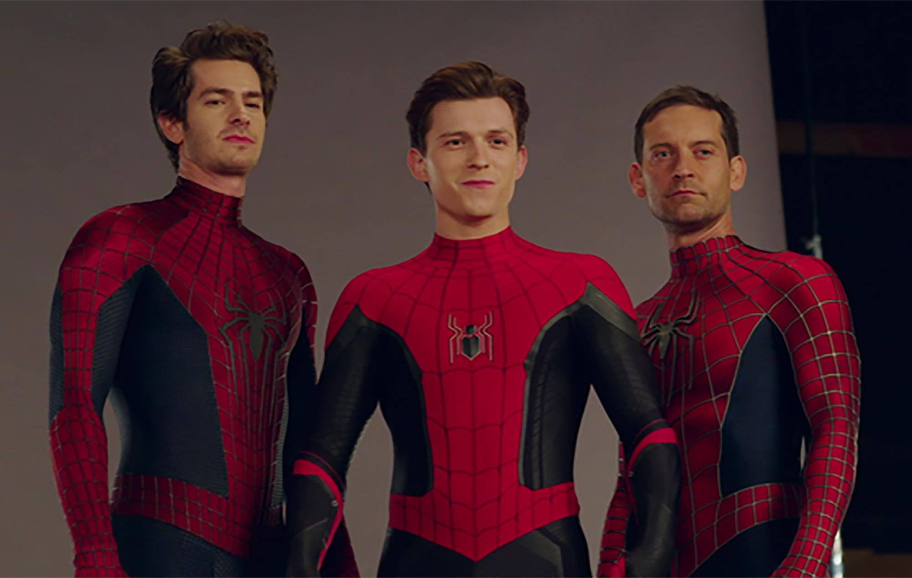

Spider-Man's identity now revealed, our friendly neighborhood web-slinger is unmasked and nolonger able to separate his normal life as Peter Parker from the high stakes of being a superhero. When Peter asks for help from Doctor Strange, the stakes become even more dangerous, forcing him to discover what it truly means to be Spider-Man.

Bitten by a radioactive spider in the subway, Brooklyn teenager Miles Morales suddenly develops mysterious powers that transform him into the one and only Spider-Man. When he meets Peter Parker, he soon realizes that there are many others who share his special, high-flying talents. Miles must now use his newfound skills to battle the evil Kingpin, a hulking madman who can open portals to other universes and pull different versions of Spider-Man into our world.